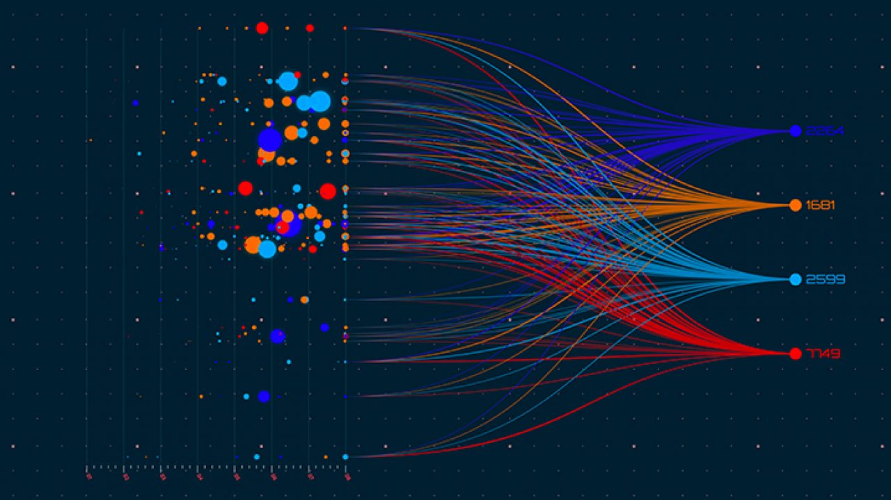

SQL QUARIES AND R STATISTICAL MODELLING IN REAL WORLD SENARIO

This project analyzes "WalmartSales" sales data, addressing real client requests with SQL for querying and R for statistical modeling (GLM) to answer client questions, to derive insights that inform strategic decisions.
TABLEAU CUSTON DASHBOARDS

This portfolio presents custom-made dashboards in Tableau, designed to analyze and visualize diverse datasets including sales performance and TV program insights. Demonstrating advanced proficiency in Tableau
SQL DATA CLEANING AND TRANSFORMATION

I present some data cleaning techniques for big data along with the code along with the results and the files
STATISTICAL MODELLING WITH GLM MODELS
This portfolio features analyses of four datasets using Generalized Linear Models (GLM) in R, showcasing the application of GLM to derive insights from diverse data scenarios. Each analysis demonstrates the effectiveness of statistical modeling in R for revealing impactful data relationships and supporting informed decisions.
STATISTICAL PREDICTIVE MODELLING
This publication examines a wide range of predictive statistical models and their applications
MEDICAL REAL DATA STATISTICAL ANALYSIS IN SPSS-R

I compared and analyzed data between Greek and German patients after surgery (laparoscopy, partial nephrectomy) for kidney tumors (recovery time, success of the operation). The research was carried out between medical clinics in Greece and Germany. The research was carried out using the statistical package SPSS
BAYESIAN STATISTICAL ANALYSIS
This project demonstrates advanced Bayesian statistical modeling using WinBUGS and R, incorporating both random and fixed effects to explore complex data relationships.

My goal was to create an algorithm in R to solve real Support Vector Machine(SVM) problems,more on project
MEDICAL REAL DATA STATISTICAL ANALYSIS IN SPSS-R
I compared and analyzed data between Greek and German patients after surgery (laparoscopy, partial nephrectomy) for kidney tumors (recovery time, success of the operation). The research was carried out between medical clinics in Greece and Germany. The research was carried out using the statistical package SPSS

In this project, I utilize R to analyze massive datasets containing millions of records, demonstrating effective techniques for handling big data challenges and building statistical models.
This project showcases how statistical methods solve clinical trial problems, emphasizing their importance in clinical research
{kind=link}
{kind=link}